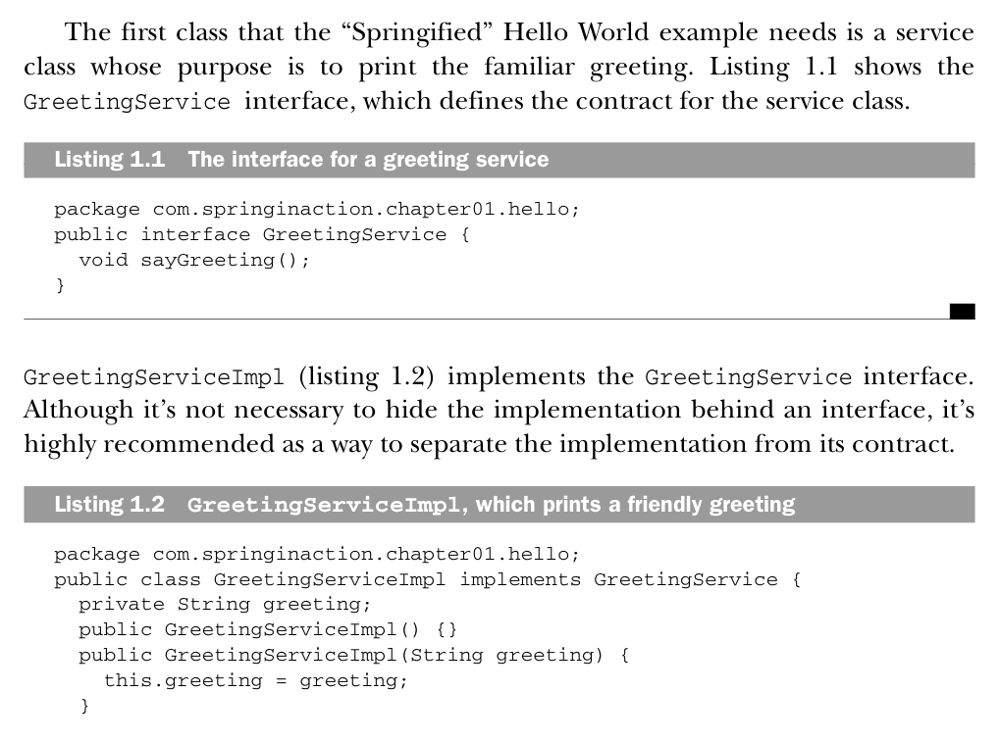
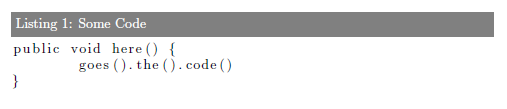

LaTeX source code listing like in professional books
How should a latex source code listing look like to produce an output like in known books, for example one for the Spring Framework? I've tried with the latex listings package but wasn't able to produce something that looked as nice as the one below. So I'm primarely interested in the formatting instructions to produce something like the sample below (from Manning's sample chapter for Spring in Action ):

EDIT With the help especially of Tormod Fjeldskår here's the complete snippet to produce the desired look:
\usepackage{listings} \usepackage{courier} \lstset{ basicstyle=\footnotesize\ttfamily, % Default font % numbers=left, % Location of line numbers numberstyle=\tiny, % Style of line numbers % stepnumber=2, % Margin between line numbers numbersep=5pt, % Margin between line numbers and text tabsize=2, % Size of tabs extendedchars=true, breaklines=true, % Lines will be wrapped keywordstyle=\color{red}, frame=b, % keywordstyle=[1]\textbf, % keywordstyle=[2]\textbf, % keywordstyle=[3]\textbf, % keywordstyle=[4]\textbf, \sqrt{\sqrt{}} stringstyle=\color{white}\ttfamily, % Color of strings showspaces=false, showtabs=false, xleftmargin=17pt, framexleftmargin=17pt, framexrightmargin=5pt, framexbottommargin=4pt, % backgroundcolor=\color{lightgray}, showstringspaces=false } \lstloadlanguages{ % Check documentation for further languages ... % [Visual]Basic, % Pascal, % C, % C++, % XML, % HTML, Java } % \DeclareCaptionFont{blue}{\color{blue}} % \captionsetup[lstlisting]{singlelinecheck=false, labelfont={blue}, textfont={blue}} \usepackage{caption} \DeclareCaptionFont{white}{\color{white}} \DeclareCaptionFormat{listing}{\colorbox[cmyk]{0.43, 0.35, 0.35,0.01}{\parbox{\textwidth}{\hspace{15pt}#1#2#3}}} \captionsetup[lstlisting]{format=listing,labelfont=white,textfont=white, singlelinecheck=false, margin=0pt, font={bf,footnotesize}}
Use it with this in your document:
\lstinputlisting[label=samplecode, caption=A sample]{sourceCode/HelloWorld.java}
Answer
It seems to me that what you really want, is to customize the look of the
captions. This is most easily done using the caption package. For
instructions how to use this package, see the manual (PDF). You would probably
need to create your own custom caption format, as described in chapter 4 in
the manual.
Edit: Tested with MikTex:
\documentclass{report} \usepackage{color} \usepackage{xcolor} \usepackage{listings} \usepackage{caption} \DeclareCaptionFont{white}{\color{white}} \DeclareCaptionFormat{listing}{\colorbox{gray}{\parbox{\textwidth}{#1#2#3}}} \captionsetup[lstlisting]{format=listing,labelfont=white,textfont=white} % This concludes the preamble \begin{document} \begin{lstlisting}[label=some-code,caption=Some Code] public void here() { goes().the().code() } \end{lstlisting} \end{document}
Result:

Suggest
I am happy with the listings package:

Here is how I configure it:
\lstset{
language=C,
basicstyle=\small\sffamily,
numbers=left,
numberstyle=\tiny,
frame=tb,
columns=fullflexible,
showstringspaces=false
}
I use it like this:
\begin{lstlisting}[caption=Caption example., label=a_label, float=t] // Insert the code here \end{lstlisting}